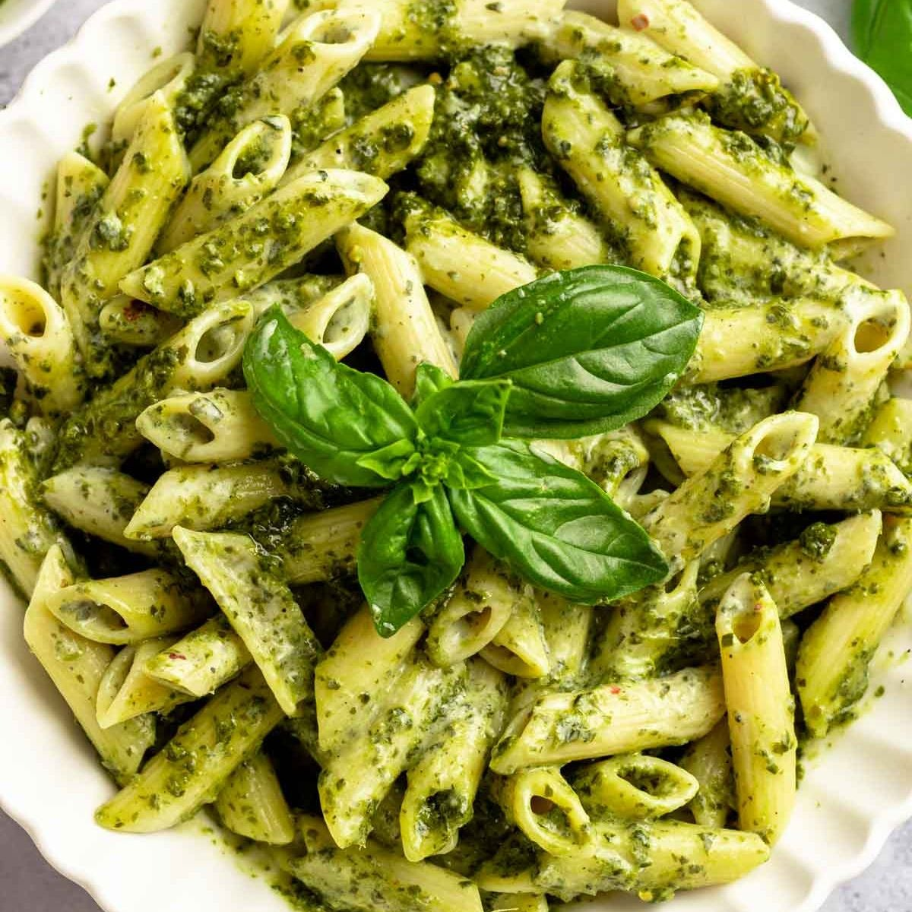

Pasta
Home

A delightful dish of al dente pasta tossed in a rich, creamy basil pesto
sauce, made with fresh basil, garlic, Parmesan cheese, pine nuts, and
olive oil. Simple, flavorful, and irresistibly fresh!
Pasta Recipe
Ingredients
- 300g pasta
- 1/2 cup basil pesto
- 2 tablespoons olive oil
- Grated Parmesan cheese for garnish
Recipe
-
Boil water in a large pot, add a pinch of salt, and cook the pasta
according to the package instructions.
- Drain and set aside, reserving 1/4 cup of the pasta water.
- In a large pan, warm the olive oil over low heat.
- Add the pesto and stir gently.
- Add the cooked pasta to the pan and toss until fully coated.
-
If needed, add a splash of the reserved pasta water to loosen the sauce.
- Plate the pasta, sprinkle with grated Parmesan, and serve hot.